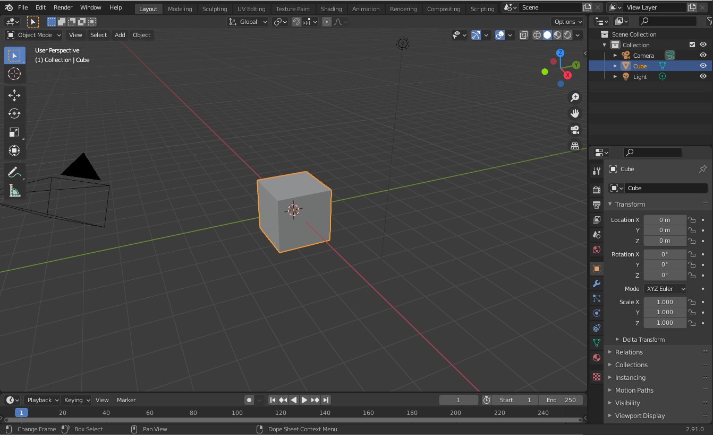
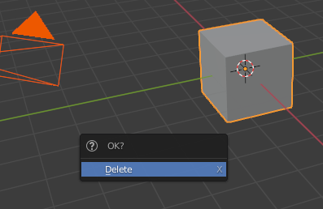
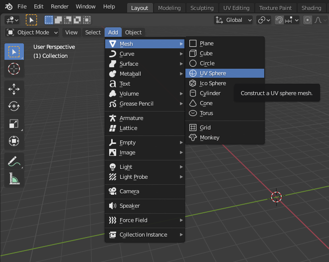
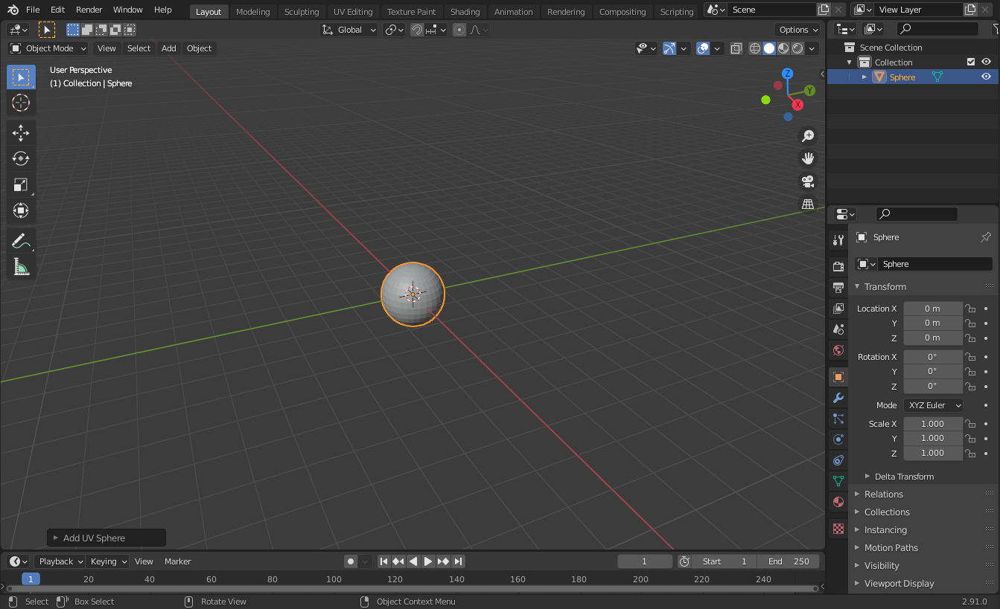
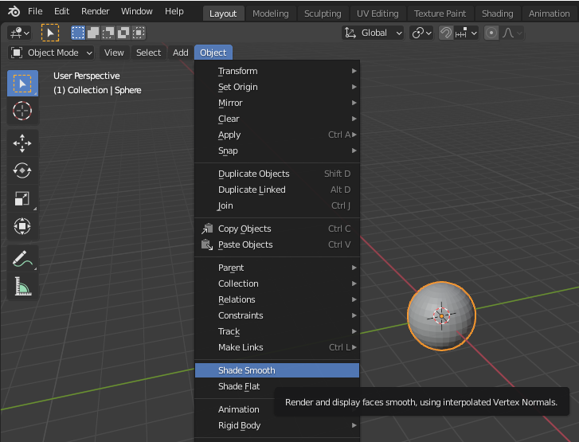
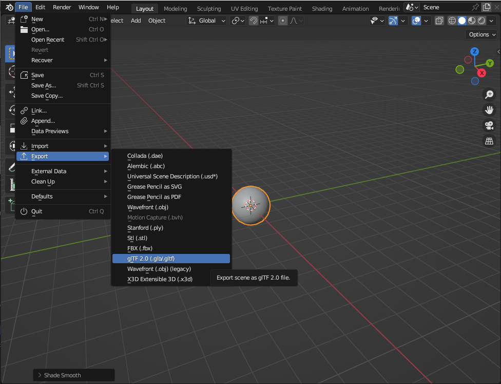
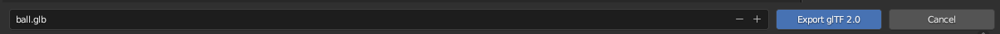
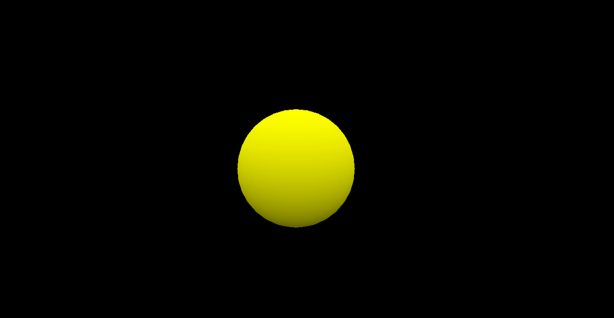

|
The small3d library
|
|
The small3d library
|
This is a tutorial on creating a ball in Blender, and then writing a C++ program that loads it and moves it around on the screen, using small3d. Alternatively you can skip the ball creation and use a model of your own, if you have one in a glTF .glb file. The source code for this tutorial can be found here: https://github.com/dimi309/ball
The first thing to do is to download small3d from GitHub: https://github.com/dimi309/small3d Just follow the instructions in the README file to build it. If you have or can find a glTF .glb file containing a model somewhere, you can use that for the tutorial. Just skip to section "CMake Setup". Otherwise you need to install Blender since this tutorial begins with creating a model of a ball: https://www.blender.org/
When you start Blender, you see a cube, and probably a camera:

Press a to select them. If they are selected already, pressing a will de-select them. Press it again in that case. Then x to delete everything. You will be asked to confirm the deletion:

Just press enter to do so. Then, from the menu, select Add > Mesh > UV Sphere:

This will create, as it says, a sphere:

With the sphere selected (use the a key if it is not), select Object > Shade Smooth from the menu:

This is not important but it will make the sphere look better. We now need to create the Wavefront file. From the menu at the top, select File > Export > glTF 2.0 (.glb/.gltf):

Save the exported file as ball.obj (name it and click on the Export OBJ button):

Let's proceed to make our first program. Note that, instead of writing all the CMake code below, we could have just created a Visual Studio project for example, adding the small3d library and dependencies to it. But using CMake as described will truly make our demo cross-platform, being able to compile and run on Windows, MacOS or Linux.
Create a directory, called ball. Then create another directory within it, called resources and place ball.obj in it. Also add the following code to a CMakeFiles.txt within the ball directory:
Create a directory called src within the ball directory and, inside it, another CMakeLists.txt file:
Inside ball/src, create the main.cpp file:
Include small3d's Renderer and SceneObject classes:
Now we need the GLFW header files:
We also need to be using the small3d namespace, so this goes under our include statements:
We also need to write the logic that will be detecting key presses:
And finally, we go to the main program, and we create the renderer. The renderer is a singleton, so it can only be retrieved via the getInstance method, and assigned to a pointer:
We will later need to access the window of the application, in order to pick up key events:
We create the ball:
small3d uses vectors a lot as parameters for convenience. When positioning the ball, the components are in order, x (-left, +right), y(+up, -down), and z (-away from the camera, +towards the camera):
So let's start our main loop now. small3d uses GLFW and you can use it too! First we need to declare the callback function, which will be the keyCallback method we wrote above.
Now in every iteration, we need to check whether we want to exit the program. Let's say that we'll be doing that with the Esc key:
Ok, the ball is positioned. Now we need to actually render it. The second parameter is the colour. Let's say it's yellow (the vector below symbolises an rgb colour, together with the alpha channel):
We are using a buffered system (we draw on one buffer, while the user is looking at the other one), so we also need to swap the buffers:
And we close the loop :)
That's it!
Let's try it out. Create a ball/deps directory and from the built small3d library copy the cmake, build/include, build/lib and build/shaders directories to this deps directory. Then, back from the root ball directory execute:
On Windows, you need to execute cmake .. -G"MinGW Makefiles", or with the preferred Visual Studio configuration (e.g. cmake .. -G"Visual Studio 17 2022").
On some platforms where the C++ '14 (at least) standard is not supported by default (this is the case on MacOS for example), in order to avoid compilation errors, you need to pass it to cmake:
cmake .. -DCMAKE_CXX_STANDARD=14
Note that you have to be inside the build/bin directory in order to execute the program, otherwise it will not find the necessary resource files (shaders, textures, etc).
There's our ball:

Try moving it around with the arrows. small3d supports a lot more features than those presented here, playing sounds, collision detection and building with the conan build system which is a lot faster and easier than plain cmake. A good way to learn about all that is to read the documentation and also to explore the source code of the sample games.